《计算机网络》读书笔记
互联网的组成
- 边缘部分：端系统，可以是个人电脑，也可以是大型计算机
- 核心部分

“主机A与主机B进行通信”，实际上指的是运行在主机A 上的某个程序和运行在主机B上的另一个程序进行通信。
端系统之间的通讯方式
客户-服务器：
进程之间服务和被服务的关系，客户是请求方，服务器是服务提供方。
服务器程序：一种专门用来提供某种服务的程序，可以同时处理多个远地或本地客户的请求
客户和服务器指的是计算机进程
对等连接方式：
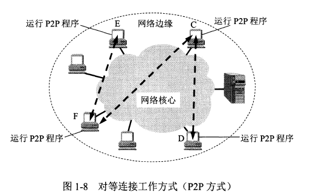
两台主机运行了对等连接软件，P2P软件，他们就可以进行平等的对等两届通信。比如双方都可以下载对方的文档。
核心部分
路由器router，它是一种专门计算机，实现分组交换，转发收到的分组。
电路交换：按照某种方式动态地分配传输线路资源。
建立连接->通话->释放连接
特点：在童话的全部时间内，通话的两个用户始终占用端到端的通信资源。
分组交换：
报文：要发送的整块数据
分组
包


路由器暂时存储的是一个个短分组，而不是整个长报文。
分组在传输时，一段一段地占用通讯资源。
路由选择协议-->自动找到转发分组的最合适的路径
internet 结构
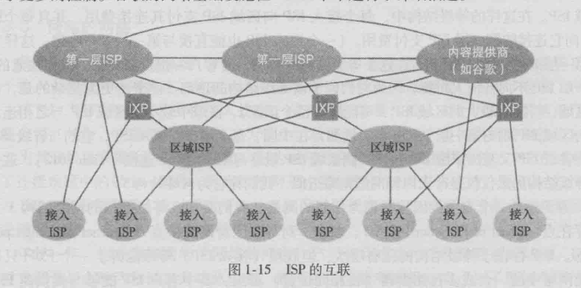
其中有ISP，ISP分层
IXP将ISP高速连接起来
网络内容提供商ICP建立自己的数据中心，加快用户体验
中国教育与科研网 CERNET 骨干网分布
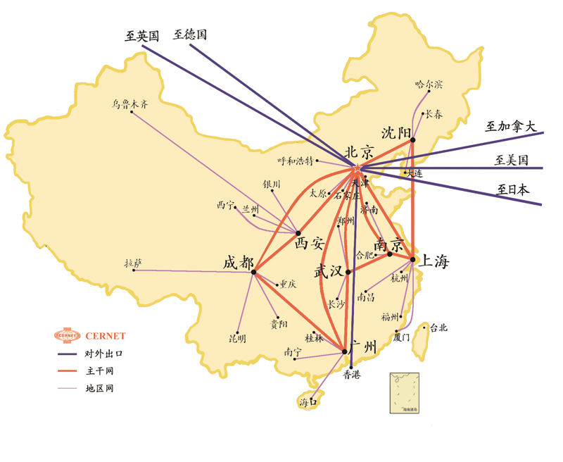
十大ISP：
电信：中国公用计算机互联网(CHINANET，即中国电信网)
网通：中国网通公用互联网(CNCNET，包括金桥网CHINAGBN)
移动：中国移动互联网（CMNET）
联通：中国联通互联网（UNINET）
铁通：中国铁通互联网（CRCNET）
卫星：中国卫星集团互联网（CSNET）
科技：中国科技网（CSTNET）
教育：中国教育和科研计算机网（CERNET）
贸易：中国国际经济贸易互联网（CIETNET）
长城：中国长城互联网（CGWNET）
计算机网络的性能指标
- 速率
- 带宽
- 吞吐量
- 时延
- 利用率
计算机网络体系结构
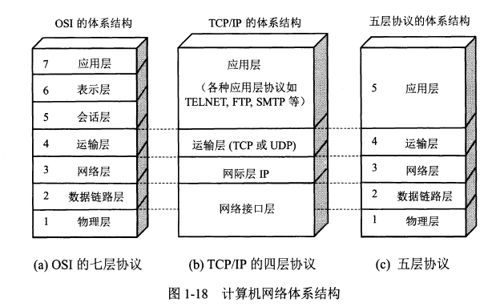
OSI 太过于复杂，不实用。
TCP/IP四层协议比较清晰，并且广泛应用。
- 应用层：进程间的通信和交互规则，例如DNS,SMTP，处理的数据称为报文。
- 运输层：两台主机中，进程之间的通信提供通用的数据传输服务。TCP,UDP
- 网络层：把运输层产生的报文段或者用户数据报封装成分组或包进行传送，称为IP数据报。互联网使用的网络层协议为：网际协议IP和多种路由选择协议
- 数据链路层：将IP数据报组装成帧，每一帧包括数据和必要的控制信息。
- 物理层：传输比特
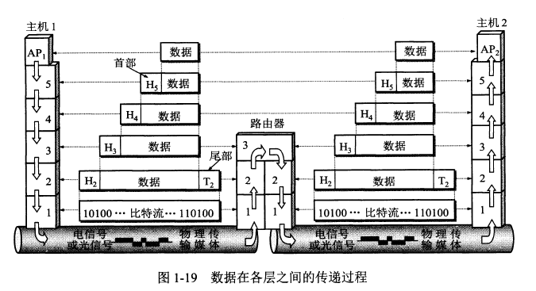
物理层
宽带接入技术
数据链路层
点对点信道
广播信道
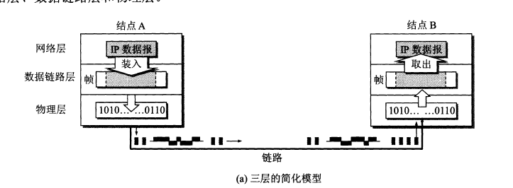
- 将IP数据报添加首部和尾部封装成帧
- 发送给节点B
- 节点B检查无误后提取IP数据报给上层网络层
三个基本问题：
封装成帧，透明传输，差错检测。
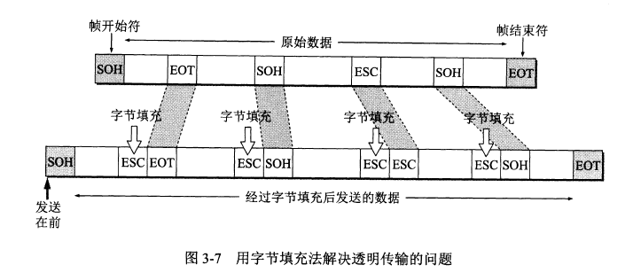
点对点协议PPP
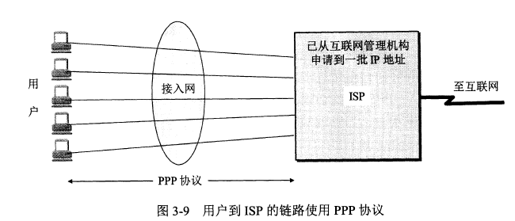
PPPoE是PPP协议运用于以太网的例子。
网络层
运输层
应用层
可能的应用构架：
- 客户端，服务端模式
- P2P
C/S模式
服务器上部署资源
服务器保持一直运行
监听知名IP
缺点：可拓展性差，高并发性弱
P2P
peer to peer
平等
请求服务增加，服务规模也在增加
难以管理
进程通信
一台设备上两个进程通信方式：
管道，消息队列等
不同设备上的两个进程通信方式：
报文message
解决的问题：
进程标识
应用层与运输层的沟通
用户使用服务
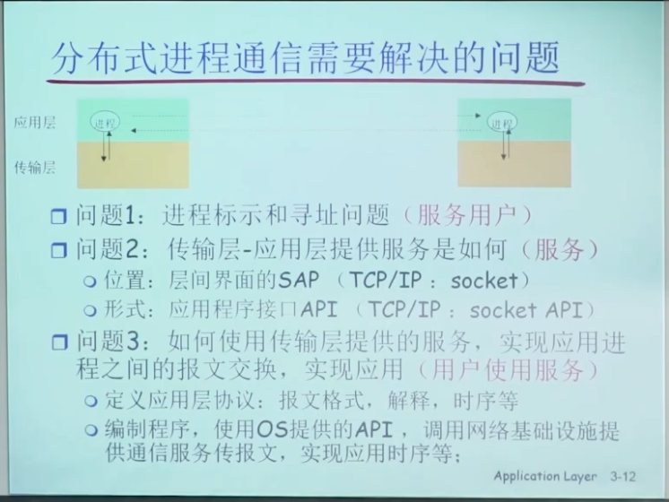
进程标识
ip, udp/tcp，端口号
tcp与udp都有各自的端口号，16个比特 2^16
TCP之上的Scoket

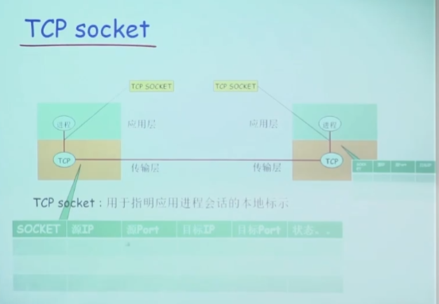
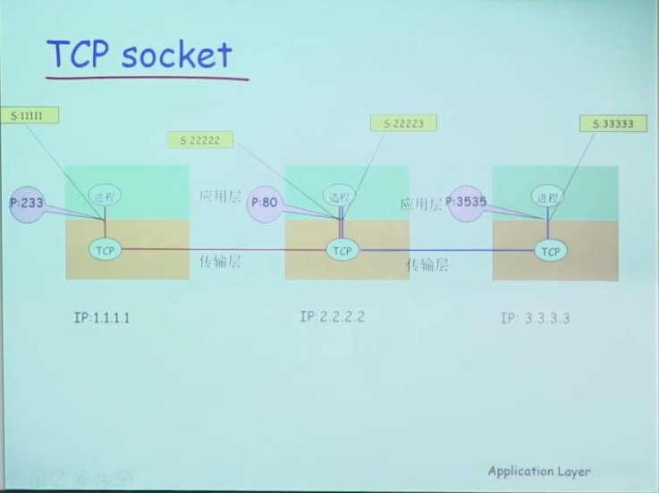
UDP socket
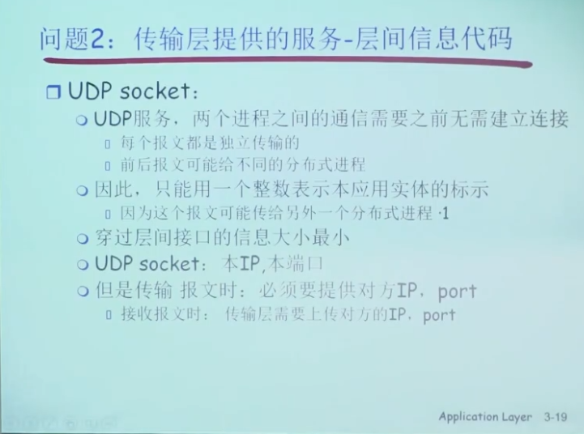
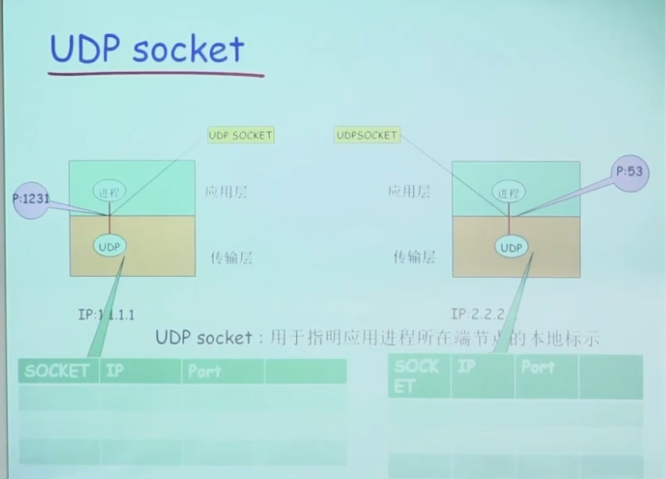
应用层协议

传输层提供的服务

web与http
url格式
prot://user:psw@